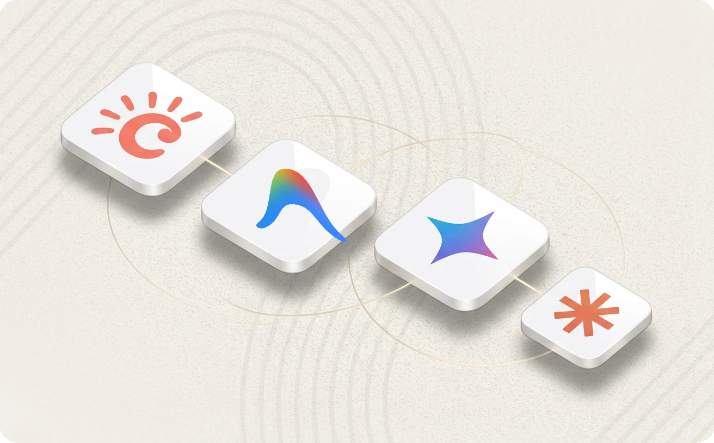
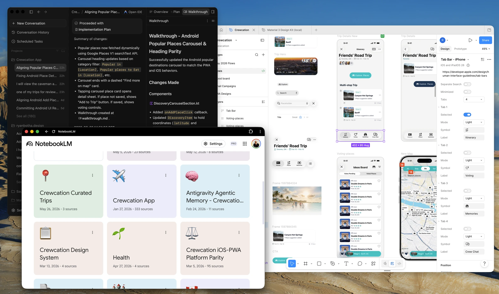
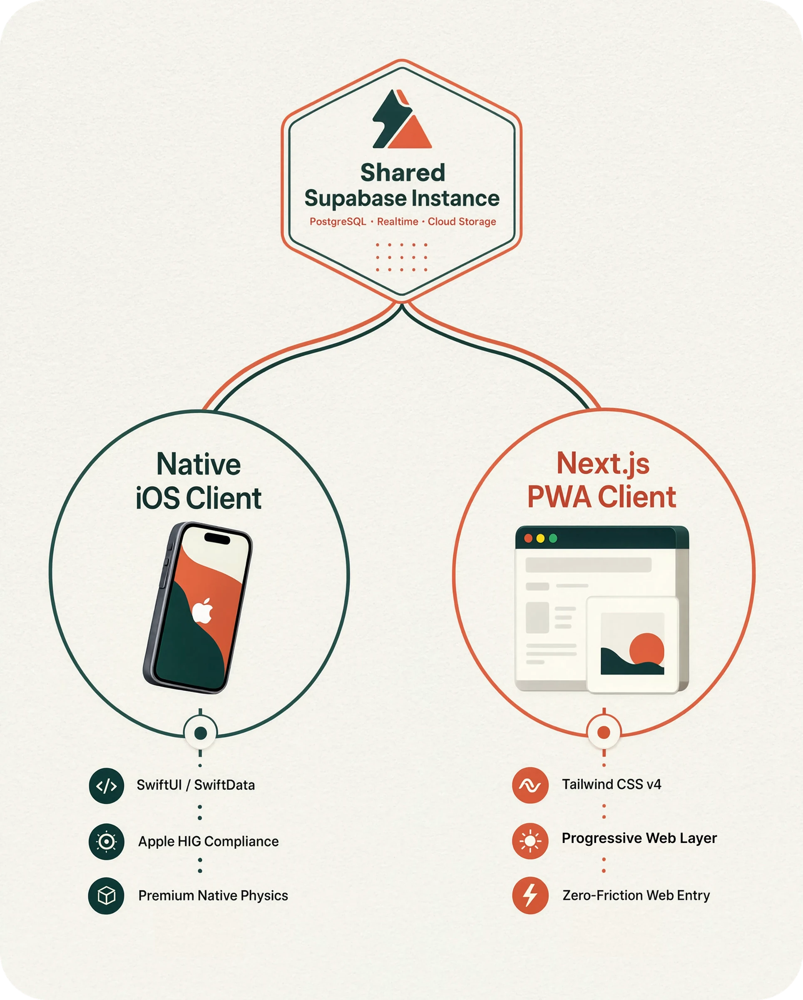
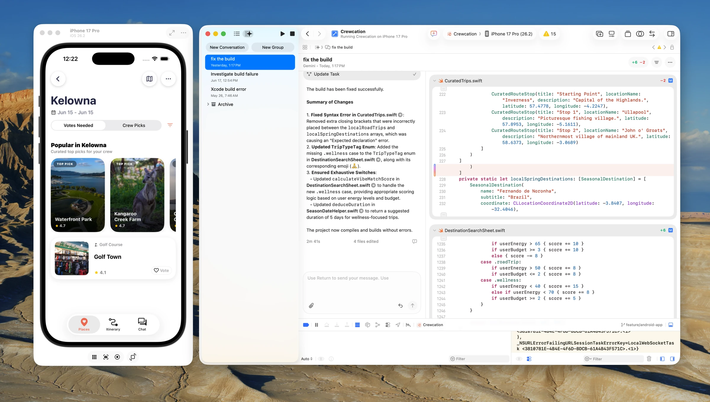
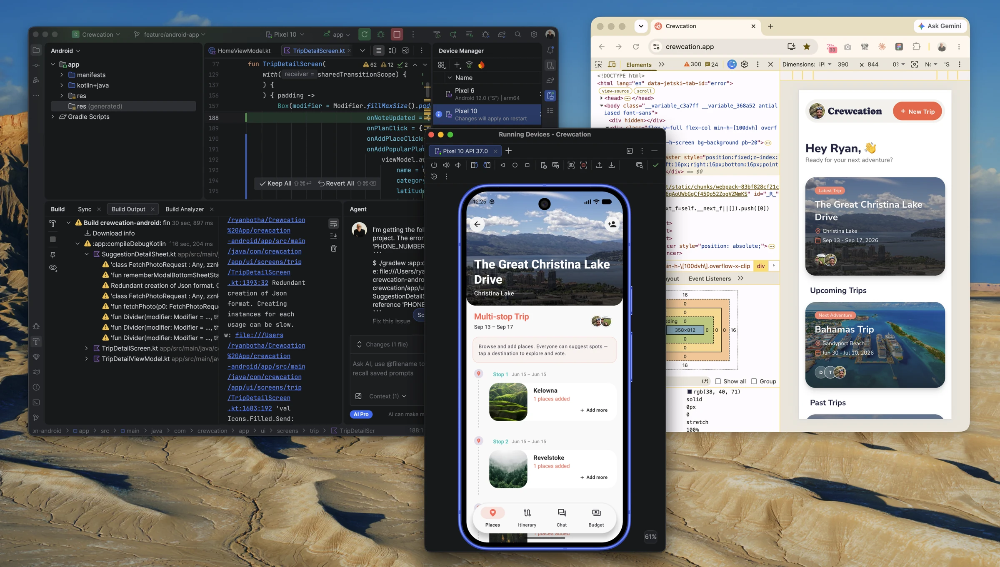
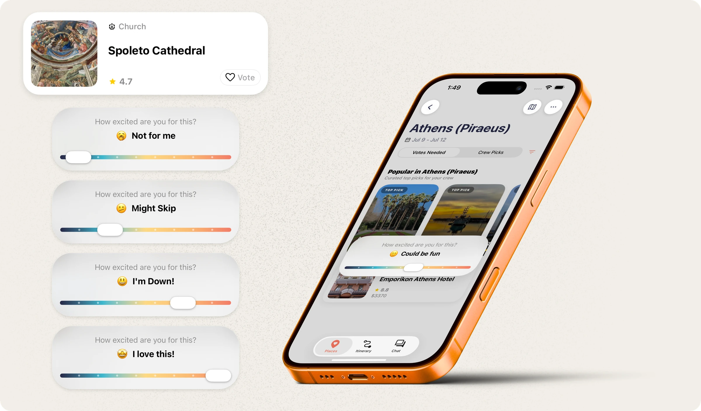

This is one piece of the Crewcation case study. I'm one designer shipping a product on iOS and the web, with Android on the way. That works because AI agents do much of the coding, and because Figma is the source of truth for how everything looks and behaves. AI speeds up how fast I can explore and build. My taste decides what ships.

A normal day: an agent's walkthrough on the left, the parity notebooks in the middle, Figma on the right.
1. Figma is the contract
Every token, layout and brand asset lives in Figma first. The colour tokens map straight into CSS variables on the web, the Xcode asset catalog on iOS and resource values on Android. When an agent builds a screen, Figma is what it checks against. So nobody, person or agent, gets to invent a new shade of grey.

One Supabase backend keeps the data in sync across apps. Keeping the design in sync is where Figma and the agents come in.
2. Agents build, I review
I work in Google Antigravity. An agent gets one scoped job, like lining up the Android Popular Places carousel and heading with iOS and web. It writes the code, runs a visual check and reports back with a walkthrough. Shared notes keep the agents on track: one notebook for iOS and web parity, one for the design system. Then I look at the result myself and decide if it's right.
3. Each platform gets its own loop
The tools change by platform. On iOS, Gemini in Xcode helps me fix builds. The code in that screenshot is the Vibe Match scoring. For Android, I keep Android Studio open next to Chrome DevTools, so the Android screen can be checked against the live web app it has to match.


Left: Gemini in Xcode working on the Vibe Match code. Right: Android checked against the web app in the browser.
4. Parity means the same product on every platform
I don't chase pixel copies. Type is SF Pro on iOS, Roboto on Android and Inter on the web. Date pickers are native on each phone and a custom calendar card on the web. Haptics only exist where the hardware does. What stays the same is the behaviour and the brand: the colours, the rounded corners, the order of the steps. You can see it all in the live style guide.
5. Where my taste overrules the default
The sentiment slider is the clearest case. iOS and web share one spec: the same gradient track, thumb size and five moods. Android doesn't have it yet. A stock Material slider wouldn't carry the gradient, the emoji or the moods, so the plan is a custom one that matches.

The bar Android has to meet: gradient track, live label and emoji, five moods across ten points.
6. What working this way taught me
Agents are quick, and they are confidently wrong sometimes. The fix is always the same. Tighten the source of truth, then rerun. That's the part of the job that stays mine.